第3天：语法分析之理论篇
第3天：语法分析之理论篇
什么是语法分析？
有一句 C 语言代码：
a = b + c;
从语法角度说，这句代码没有问题。（有的读者会问这些变量都声明了吗？这是语义分析要解决的问题。在语法分析阶段，不考虑这个。）
但是，如果代码写的是 a = b + ; 这就不符合语法了。再比如写成 a = b + c（没有分号）这也不合语法。
通俗讲，语法分析就是分析代码是否符合语法规则。
语法规则用什么来描述？这就需要了解“形式化文法”。
形式化文法
形式化文法是一个用于精确、无歧义地定义形式语言（一组字符串的集合）的数学系统。它通过一套有限的规则，描述了如何从初始符号开始，通过一系列推导步骤，生成该语言中的所有合法句子。
一个形式化文法通常由一个四元组定义：
N：非终结符集合。表示语法结构的中间变量，用尖括号或大写字母表示。
T：终结符集合：语言的基本符号，无法再分解，比如前面词法分析得到的各种 token。
注意：非终结符和终结符没有交集。
P：产生式集合。描述替换规则，定义了如何从非终结符出发，逐步推导出合法的终结符号串。
形式：α -> β（读作：α 能推导出 β）。
α 是一个包含至少一个非终结符的符号串。
β 是由终结符和非终结符组成的任意符号串（包括空串 ε）。
α称为产生式头或左部；β称为产生式体或右部。如果一个产生式头可以推出多个产生式体，那么这些体可以放在一起表示，不同体之间用“|”（读“或”）分隔。
S：开始符号。指定一个非终结符号为开始符号，是整个推导过程的起点。
为了帮助读者理解，下面举几个例子。
例1 理解终结符和非终结符
英文句子有多种句型，其中一个句型是 “主语 + 及物动词 + 直接宾语”
如果用产生式来表示，就是：
<句子> -> <主句> <及物动词> <直接宾语>
这里的 <句子>、 <主句>、<及物动词>、 <直接宾语> 都是非终结符，它们都是抽象的概念。
主语可以继续往下分解，例如：
<主语> -> <名词> | <代词> | <动名词>
<名词> 、 <代词>、<动名词> 也是非终结符。
<名词> 也是抽象的概念，还可以再分解。
如果我写出一个产生式：
<名词> -> Tom
这里的 Tom 就是终结符，因为它不是抽象的概念，是实际出现在句子里的符号。
<句子>、 <主句>、<及物动词> 等非终结符，不会直接出现在最终的句子里，它们只是用来描述句子结构的。
可以说，无论是计算机语言还是自然语言，都是终结符的集合。
为了分析语言或者总结语言的规律，我们把终结符归类、排列、层层抽象，得到各种非终结符。
例2 理解产生式和推导
先看看什么是“推导”。
所谓推导，就是从开始符号出发，不断将某个非终结符替换为该非终结符的某个产生式的体。一直推导下去，直到所有非终结符都变成了终结符，就得到了这个文法的一个句子。所谓语言就是由文法 G 产生的所有句子的集合。
假设你开了一家早餐店，并且有两个机器人帮你把餐品送到客户手中。
机器人只能听懂一种非常格式化的语言，这样它就可以 100% 准确理解，不会出错。你为这种“点餐语言”制定了一种文法。
这个文法包含 4 部分:
-
基本单词 (终结符)：规定顾客可以使用哪些最基本的词。这些词是最小单元，不能再拆分。
包括：“汉堡”、“咖啡”、“一号餐”、“二号餐”、“和”；
-
语法概念 (非终结符)：定义一些抽象概念，用来把基本单词组成更大的单元。
包括：<订单> 、<套餐>、 <物品>
这些概念都是什么意思，就蕴含在规则（产生式）中。
-
规则（产生式）
规则1:
<订单> -> <物品> | <物品> 和 <订单> 一个订单可以是一个物品，或者是一个物品后跟“和”，再接一个订单；
规则2:
<物品> -> <套餐> | 汉堡 | 咖啡 一个物品可以是套餐，或者单点汉堡，或者单点咖啡；
规则3:
<套餐> -> 一号餐 | 二号餐 套餐有两种选择，要么一号餐，要么二号餐；
-
开始符号： <订单>
机器人总是从
<订单>开始推导。
场景一：处理一个合法订单
顾客说：一号餐和咖啡
机器人拿到这句话，开始规则解析：
-
解析从
<订单>开始。根据规则 1，<订单>可以推导出 <物品>或者 <物品> 和 <订单>因为顾客说“一号餐和咖啡”，所以匹配后者。<物品> 应该能对上“一号餐”，<订单> 应该能对上“咖啡”；
-
根据规则 2，<物品> -> <套餐>，再根据规则 3， <套餐> -> 一号餐，所以<物品>可以推导出“一号餐”，至此，<物品> 和“一号餐”对上了；
-
下面检查<订单> 能否推导出“咖啡”：根据规则 1，<订单> -> <物品>，再根据规则 2，<物品>->咖啡，所以<订单> 可以推导出“咖啡”
-
至此，全部都匹配上了，所以这是一个合法的<订单>
场景二：处理一个非法订单
顾客说：和咖啡
-
解析从
<订单>开始。根据规则 1，<订单>可以推出 <物品>或者 <物品> 和 <订单> -
不管是前者还是后者，第一个符号都是 <物品>，根据规则 2，<物品> -> <套餐> | 汉堡 | 咖啡；
-
根据规则3， <套餐> -> 一号餐 | 二号餐；于是得出结论，第一个单词必须是“ 一号餐 | 二号餐 | 汉堡 | 咖啡”，不能是 “和”
-
机器人回复：“语法错误！订单必须以‘一号餐’、‘二套餐’、‘汉堡’或‘咖啡’开头。”
语法分析树
先介绍两个概念，终结符号串和 ε（epsilon，直接音译为 “艾普西隆”）。
- 终结符号串：由零个或多个终结符号组成的序列。
- ε 表示空串，就是由零个终结符号组成的串，可类比字符串中的空串
“”
语法分析的任务是：接受一个终结符号串作为输入，找出从文法的开始符号推导出这个串的方法。如果不能从文法的开始符号推导得到该终结符号串，则报告该终结符号串中包含的语法错误。
语法分析树是推导的图形表示。
- 树根就是开始符号；
- 每个叶结点由终结符或者 **ε **标记；
- 每个内结点由一个非终结符标记。
语法树的叶结点从左到右的排列，刚好是这个文法所产生的语言的一个句子；
为给定的终结符号串（句子）构造一棵分析树的过程称为这个串（句子）的语法分析（parsing)。
前文关于合法订单的例子，机器人的分析过程可以对应到树的构造过程。如下图：
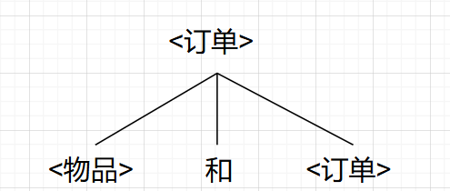
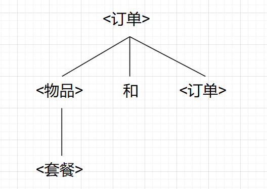
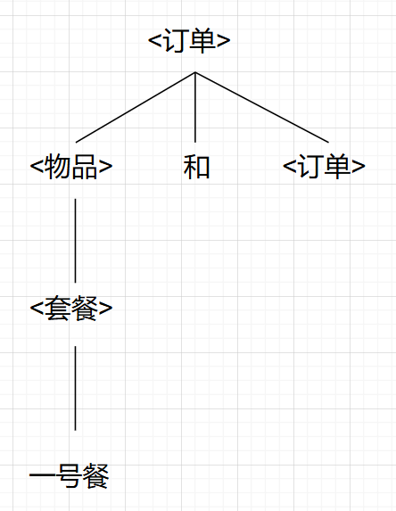
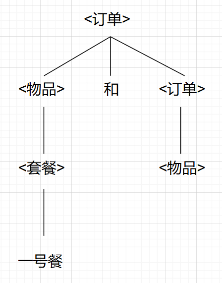
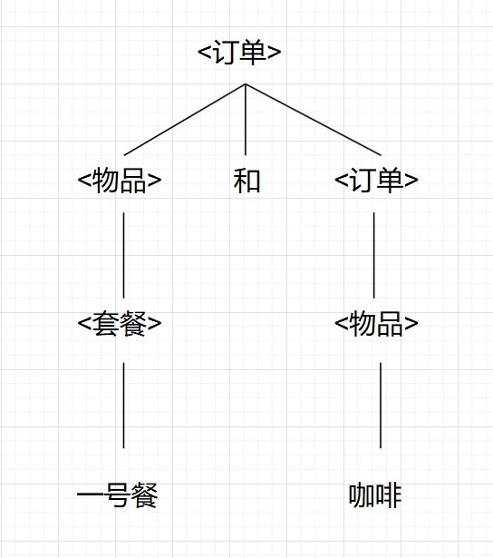
如果可以构造出一棵树，说明句子是合法的，否则说明有语法错误。
理解开始符号。前文提过，为了分析语言或者总结语言的规律，我们把终结符归类、排列、层层抽象，得到各种非终结符。
非终结符是有层次的，低层次的非终结符可以组成高层次的非终结符，高层次的非终结符再组成更高层次的非终结符，…, 最后就聚集到一个非终结符上，也就是树根，它就是开始符号。
开始符号最大的作用就是告诉编译器从哪条规则开始解析代码。
还是以机器人送餐为例，因为 <订单> 是开始符号，所以解析从<订单>开始；如果没有指定开始符号，机器人就不知道从哪个产生式开始推导。
递归下降的语法分析
递归下降是一种语法分析方法：
-
为每一个非终结符编写一个函数，函数内部则按照这个非终结符的产生式的右部符号顺序编写。
-
假设这个非终结符的产生式为：
那么 A() 函数内部应该这样处理：
- 整个程序的入口是开始符号对应的函数。
说“递归”是因为整个程序往往包含递归，包含递归的原因是有的产生式就是递归定义的；
说“下降”是因为整个程序的入口是开始符号对应的函数，也就是语法分析树的树根，随着函数的层层调用，这棵树从上往下生长，是一个自顶向下的过程。
如果读者不理解上面的话也没有关系，后面还有实战环节帮助读者理解。
消除左递归
我们看一个产生式:
对于产生式
产生式体最左边的符号和产生式头部的非终结符相同，都是 ，这种情况就称非终结 和它的产生式是左递归的（left recursive）；
如果采用递归下降分析法，程序就会陷入无限循环。
1 | |
因为 expr 有 2 个产生式，所以要么执行第 4 行，要么执行 6~8 行。
第一次调用 expr():假设读入的符号无法和 term 的首个终结符匹配，则执行 else 部分，第 6 行会再次调用 expr()；
第二次调用 expr()：因为程序并没有读入新的符号，所以还要执行 else 部分；
第三次调用 expr()：同理，还要执行 else 部分；
…
这样就无穷执行 expr()…
那怎么办呢？通过改写产生式就可以消除左递归。
考虑两个产生式：
A 是非终结符， 和 是不以 A 开头的终结符/非终结符序列。
例如，在产生式 中，非终结符 A = expr, 串 = + term, 串 = term；
从 A 开始，不断用 替换 A，将得到 ；
此时用 替换 A，我们就得到了一个在 后跟有多个 的序列。
我们把 的语法分析树画出来：
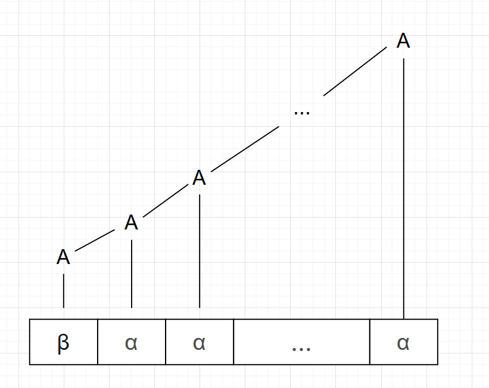
把 0 个或多个 的序列用非终结符 R 表示，那么 A 的产生式可以写成：
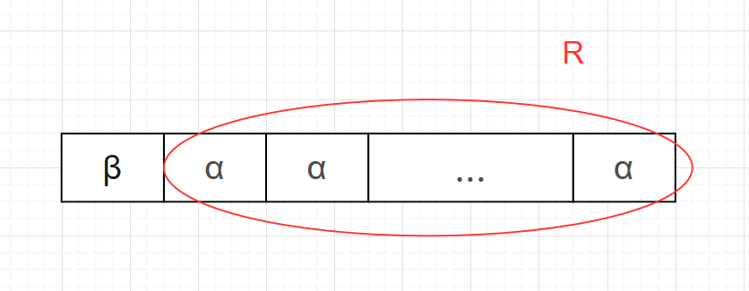
R 可以用递归的方法表示：
所以，对于左递归的产生式
可以改写为：
有的读者说， 不也是递归吗？
没错，但是这是右递归，因为 R 是产生式右部的最后一个符号（在最右边），所以称之为右递归。
套用上面的公式，
可以改写为：
把上面的产生式翻译成伪代码：
1 | |
虽然 R() 会递归调用自身，但是 10 ~ 11 行会消耗 ‘+’ 和 term；
这样就会不断读入新的符号，程序就不会陷入无限循环。
LL（1）文法
递归下降分析法不仅存在无限循环的问题，还存在另外一个问题。
回顾前文，当我们给非终结符 A 编写函数的时候，如果 A 只有一个产生式，那没有问题。但是如果 A 有多个产生式呢？
依然是前面的伪代码：
如果有产生式：
那么 A() 函数内部应该这样处理：
如果执行到最后的 else 分支，并不能说明发生了错误，也可能是产生式选错了，这时候我们要做的是逐个尝试 A 的产生式。只有当所有的产生式都尝试完毕，才知道是不是发生了错误。
为了尝试另一个产生式，我们需要把已经读取的词法记号放回到缓冲区中（回溯），这无疑让程序编写变得复杂。
如何解决这个问题？
有一种文法叫 LL(1) ，对于这种文法，我们可以构造出预测分析器，也就是不用回溯。
这种文法的名字体现了我们要构造的预测分析器的特点：
- 第一个 L：从左向右（Left-to-right）扫描输入字符串。
- 第二个 L：构建一个最左推导（Leftmost derivation）。
- (1)：在每一步分析时，只需要向前查看1个输入符号（token）来决定使用哪条产生式规则。
最左推导的意思是在推导过程中，总是选择当前句型中最左边的非终结符进行替换。（句型是推导过程中的任一时刻的符号串表示，可以同时包含终结符和非终结符。）
为什么要用最左推导呢？很简单，第一个 L 的意思是“从左向右（Left-to-right）扫描输入字符串”，所以匹配过程也要从左到右。
在最左推导中，当前要扩展的正是句型中最左边的非终结符。这个非终结符的右侧可能还有其他非终结符或终结符，但这些都还没有被分析到。
试想如果不是最左推导：假设当前句型中有多个非终结符（如 A B C），分析器选择先扩展最右边的 C,但是当前要分析的 token 其实是 A 扩展出来的，这不是张冠李戴吗？
LL(1)文法的形式化条件
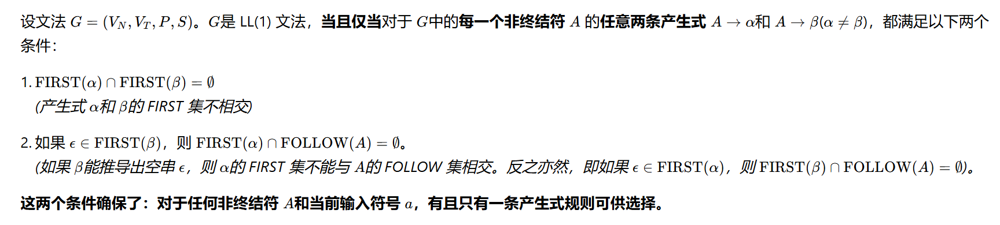
上面的形式化条件留给学有遗力的同学去钻研。
看不懂没有关系，不影响后面的学习。总之记住，在构造文法的时候，我们不可能给自己挖坑。对于任何非终结符 A，如果它有多个产生式，我们只需要向前查看 1 个输入符号（token）就可以决定使用哪个产生式。
提取左公因子
在构造文法的过程中,往往不是一步到位,对于不合要求的文法要加以改造。
请看下面的产生式：
1 | |
假设当前读入的 token 是 if，请问我们选择哪个产生式呢？
感觉哪个都可以，因为都是 if 开头的。
这就需要我们改写产生式：
首先，在 <stmt> -> if ( <expr> ) <stmt> 尾部增加 ε, 因为 ε是空串，这并不会改变原来的意思。
1 | |
其次，注意到它们有共同的左因子if ( <expr> ) <stmt>
把 ε | else <stmt> 用新的非终结符 <else-clause> 表示，则产生式被改写为：
1 | |
现在再看看之前遇到的问题还存在吗？
假设当前读入的 token 是 if，
根据产生式 <stmt> -> if ( <expr> ) <stmt> <else-clause>
先匹配 “if”, 再匹配“(”，再调用 expr(), … 最后调用 else_clause()
else_clause 函数的伪代码是：
1 | |
当输入符号是 else 的时候，就调用 stmt(); 否则认为 else 部分不存在。
当一个非终结符的多条产生式具有共同的起始部分（即左公因子） 时，编译器在分析时无法仅凭向前查看 1 个输入符号就能确定用哪个产生式。
提取左公因子就是为了解决这个问题。
实战环节
这部分内容用一个简单的例子帮读者理解如何把产生式转换成代码。
某个文法定义如下：
-
非终结符 (VN):
<赋值语句>,<表达式>,<项>,<其余项>,<变量>,<数字> -
终结符 (VT):
'=','+',';','a','b','c','0','1','2',ε -
开始符号 (S):
<程序> -
产生式集合 (P): 下面的 7 条产生式规则
1 | |
我们手工推导一下，看看能推出什么句子。
1 | |
然后推导 <赋值语句>
1 | |
所以， 'a' '=' '0' '+' '2' ';' 是这个文法的一个句子。
同理，我们可以推出
1 | |
以上都是符合语法的。
1 | |
这句就不符合语法。因为 ‘=’ 左边是 <变量> ， <变量> 只能推导出 ‘a’ | ‘b’ | ‘c’ , 推导不出 ‘1’
此文法属于 LL（1） 文法，我们可以构造出一个不需要回溯的递归下降分析器。
下面，请编程实现一个简单的语法分析器，用它分析给出的文本文件是否合乎文法。
代码实现
为了方便阅读和书写，我们把终结符的单引号都去掉。
递归下降法告诉我们，要为每一个非终结符编写一个函数。
我们从简单的产生式开始。
1 | |
注意，和 scan() 函数一样，我们每次都会预读一个 token, 所以执行 num() 函数的时候， token_g 已经有值了。
因为只有 0，1，2 是合法的数字，所以不是这些数字就应该报错（第 9 行）
第 11 行调用 get_token()，再次读入一个 token;
1 | |
var() 函数用来分析变量。在我们的词法分析里面， a，b，c 被解析成标识符（用字符数组存储，属于字符串），所以 7~11 行比较字符串。
有读者问，为什么 8、10、12 都空着？因为现阶段我们只是判断语法正不正确，无需再做什么。
14、17 行是错误处理，报错“未知变量”。
19 行，预读 token；
num() 和 var() 函数都写好了，相当于有了 2 块积木。现在就可以利用它们做更大的积木了。
1 | |
<项> 可以推导出 <变量>，也可以推导出 <数字>，如何选择产生式呢？
这时候就体现出“只需要向前查看 1 个输入符号就可以决定用哪个产生式”。
因为非终结符 <变量> 和 <数字> 展开后的第一个 token 是不同的，判断当前的 token, 如果是 NUM（第 6 行），那肯定是数字，所以调用 num()，否则调用 var();
1 | |
<其余项> 可以推导出 + <项> <其余项> ，也可以推导出 ε；
到底是哪个呢？还是判断 token_g，如果是 ADD，就选择 + <项> <其余项> ，否则就选择 ε（就是不处理）
第 8 行读入新的 token；
第 9 行，<项> 对应的函数是 item(), 直接调用就行；
第 10 行，<其余项> 对应的函数不就是我们正在写的这个 other_items() 吗？ 这里递归。
other_items() 函数也完成了，下面完成产生式 <表达式> -> <项> <其余项>。
1 | |
非常简单，就像搭积木一样。
1 | |
第 6 行，直接调用 var()；
接下来，应该是等号，我们需要判断一下，如果不是就报错；
第 12 行，还是用我们造好的轮子， expression()函数；
别忘了，最后还有一个分号。
还有最后一个函数，就是开始符号 <程序>。
当文件到了末尾，就可以用 “ <程序> -> ε”
1 | |
对了，还有main() 函数：
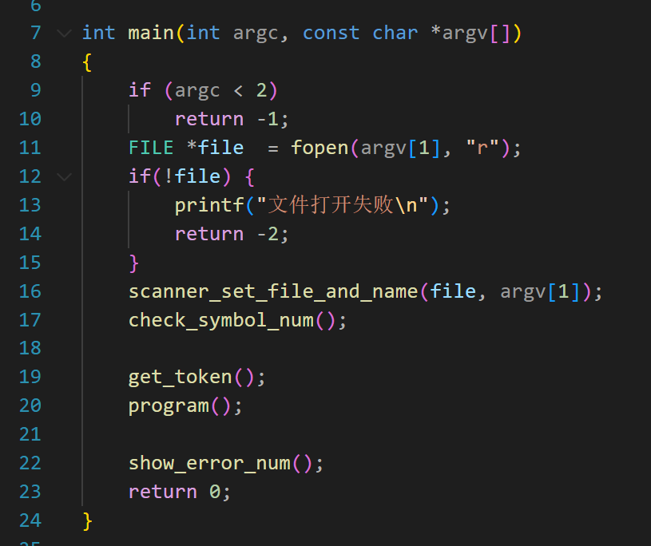
关键代码是 19~20 行。
19行：先读入一个 token
20行：调用开始符号代表的函数： program()
22行：如果有语法错误，就打印出错误的个数。
我们写几个简单的源文件测试一下。
成果展示
测试1
1 | |
运行结果是：
1 | |
测试2
1 | |
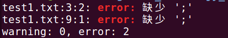
2 个地方缺少分号都检查出来了。但是行号没有对上（没有关系，这不是这节课的重点）。
测试3
1 | |
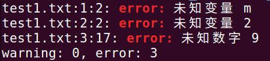
如果你已经掌握了这个简单的语法分析程序，那么可以顺利学习后面的内容了。